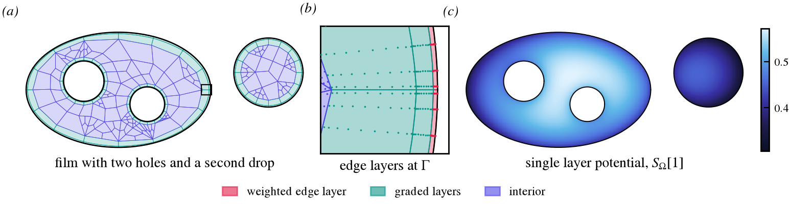
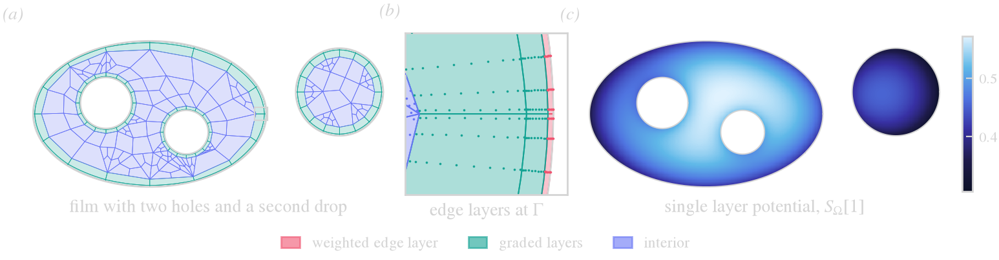

OpenSurfaces.jl


OpenSurfaces computes integrals of singular kernels over a flat open surface $\Omega \subset \mathbb{R}^2$ (a domain in the plane $z = 0$, possibly with holes and several components) and over its edge $\Gamma = \partial\Omega$:
\[u(x) = \int_\Omega K(x - y)\,\mu(y)\,dA_y, \qquad v(x) = \oint_\Gamma K(x - y)\,\nu(y)\,ds_y,\]
at the nodes of the mesh, on $\Gamma$, or at any points of the plane, to a tolerance you set. The kernels are the standard ones of potential theory and slow flow (the 2D and 3D Laplace kernels, the 2D Stokeslet and its traction, the in-plane block of the 3D Stokeslet, modified Helmholtz), kernels you write as functions, and kernels built from their Fourier symbols. It does four things for you:
- Meshes the domain from its boundary. Adaptive high-order panels on $\Gamma$ from a parametrization, and an area mesh of quadrilateral panels with a layer on $\Gamma$ graded toward it, where the densities of first-kind equations on open surfaces have their $d^{-1/2}$ edge singularity ($d$ the distance to $\Gamma$): it is folded into the quadrature weights, so it costs nothing.
- Corrects the quadrature where the kernel is singular. Targets on a panel, on its side, at its corner, on $\Gamma$, or just off it get accurate local weights; everything else uses the plain rule.
- Sums the rest fast. FMM (2D and 3D), Ewald splitting with NUFFTs, or direct sums, chosen by the kernel.
- Builds kernels from their symbols. A radial kernel known by its Fourier transform (a finite depth, a screening length, an embedded membrane) is a standard kernel plus a smooth remainder, tabulated once.
It knows nothing of the physics behind the kernels: a model passes its own in.
In one call
using OpenSurfaces
# the unit disc at p = 10: boundary panels, then the boundary nodes and the area mesh
pans = discretize_curve(θ -> Vec2(cos(θ), sin(θ)), 10)
bd, ad, _ = build_mesh(pans, 10)
# the 3D Laplace single layer of a unit density on the disc: S[1] = E(r²)/π (complete elliptic integral)
S = SingleLayer3D(ad)
u = single_layer(S, ones(length(ad))) # within 2e-8 of E(r²)/π at the default tolWhat it offers
| Geometry | adaptive boundary panels from a parametrization; area meshes (by Gmsh) with graded edge layers, holes, several components; mesh quality, interpolation |
| Kernels | Laplace (2D, 3D), 2D Stokeslet, pressure and traction, the in-plane half-space Stokeslet, modified Helmholtz; any callable K(r) or K(i, r); SymbolKernel from a Fourier symbol |
| Quadrature | local corrections for area sources (polar rules on the panel, adaptive near it) and line sources (log product rules on $\Gamma$, adaptive near it), as sparse matrices |
| Fast sums | FMM2D, FMM3D, Ewald + NUFFT (3D Stokeslet, 3D Laplace, 2D log and K₀ kernels, a whole 2D + 3D film operator on one grid), smooth convolutions |
| Evaluators | Evaluator (any kernel, area or line sources, any targets) as a function and as a linear operator for Krylov solvers, its dense matrix and diagonal blocks; SingleLayer3D, VolumePotentials |
Where to go next
- Getting started: installation, a mesh, densities, an evaluator, operators and solves, kernels of your own.
- Method: the geometry, the quadrature, the fast sums, kernels from symbols, and the limits.
- Examples: scripts that solve or evaluate against exact solutions.
- API reference and the Code map: every function, and which feature runs it.